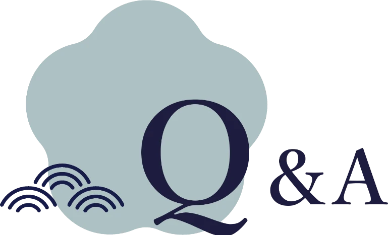

Q.美顔鍼は初めなのですが、 どういったものなのでしょうか?
A.直接的に顔面部の適切な部位に刺鍼をすることにより、顔面の皮膚組織の代謝亢進や血流改善、また、筋肉の弛緩を促すことにより、「しわ｣、 「くすみ｣、「むくみ」などの様々な肌トラブルの解消に効果が期待できる。顔面部への治療方法も各治療者により様々ですが、主訴の部位や主なツボに刺減するのが大半となります。
Q.美顔鍼を受ける際に注意することはありますか?
A.まず、施術時間についてですが、おおよそ 40 分程度です。 初回時には問診などがありますので、50分程度の時間がかかります。また、お化粧についてですが、 施術の関係上、または、衛生的にもなるべくノーメイクでお越し頂けますと幸いです。
Q.予算はどれくらい必要ですか?
A.直接的に顔面部の適切な部位に刺鍼をすることにより、顔面の皮膚組織の代謝亢進や血流改善、また、筋肉の弛緩を促すことにより、「しわ｣、 「くすみ｣、「むくみ」などの様々な肌トラブルの解消に効果が期待できる。顔面部への治療方法も各治療者により様々ですが、主訴の部位や主なツボに刺鍼するのが大半となります。
Q.予約をした方がよいのでしょうか?
A.はい。 施術担当者が限られておりますので、事前のご予約を願い致します。